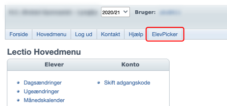

Med ElevPicker kan du udvælge en tilfældig elev ved at klikke på den røde knap, som hedder Vælg en tilfældig elev.
Samme elev kan ikke blive trukket igen før alle elever er trukket eller du genindlæser siden.
For at vise alle eleverne igen, men ikke nulstille de elever, der allerede er blevet trukket, så skal du bruge knappen .
Du har også mulighed for at lave grupper, for at gøre det skal du klikke på den gule knap Lav grupper.
Ud fra grupperne har du mulighed for at danne matrix grupper ud fra de grupper, som lige er blevet oprettet. Du skal bare tjekke checkboxen af.
Du kan læser mere om gruppe funktionen her
ElevPicker er kun lavet til at virke på Lectio, og inde på Lectio virker ElevPicker kun på en klasses elever side.
Der er to måder at at finde frem til ElevPicker, den første måde er den nemmeste og smarteste.
Den første metode for at komme frem til ElevPicker er ved at bruge genvejs knappen.
Du kan altid se denne knap inde på Lecto, ved at kigge i den øverste navigationsbar, som er under din skoles navn:

Denne genvej hjælper dig med at komme frem til der hvor du kan bruge ElevPicker, hvilket består af to trin.
Trinene er:
2b.
Elever.
Det er nemmere at bruge genvejs knappen, som er blevet beskrevet oven over, men her kan du se hvordan man kommer frem til ElevPicker uden at bruge genvejs knappen.
Jeg vil anbefale at bruge genvejs knappen, men hvis du er interesseret i den manuele vej så læs dette også.
Du finder ElevPicker ved at gå ind på en klasses elever side. Her er den manuele vej derind:
Hovedmenu.
Klasse på listen og klikker.
Elever.
Hvis du har nogen elever, som ikke skal trækkes eller skal være i nogen gruppe, så skal du skrive deres ElevPicker nummer. Hvis du holder mussen over (ElevPicker nummer) så kan du se hvor du kan finde deres ElevPicker nummer.
Når du skal skrive de elever som du ikke vil kunne trække, eller have i en gruppe, så skal du skrive elevens ElevPicker nummer i inputfeltet. Hvis du vil skrive flere elever, så skal du dele talene med et komma i inputfeltet. Et eksempel på hvordan det kunne skrives: 10,6,12,22
ElevPicker nummerne er i deres egen kolonne i tabellen med eleverne.
For at lave grupper skal du først klikke på den gule knap Lav grupper. Derefter vil der komme en kasse frem.
Det første felt skriver du hvad grupperne er til, altså om det er matematik grupper eller engelsk grupper osv.
Dette bliver også navet på filen som grupperne bliver gemt i.
Du kan enten lave grupper ved at sige hvor mange grupper du vil have, eller hvor mange elever der skal være pr. gruppe.
ElevPicker vil selv regne ud hvis det ikke går op, og tilføje elever til grupper som er overskydende.
Antal grupper.
Antal elever pr. gruppe.
Elever som ikke skal i nogen gruppe (ElevPicker nummer). Læs mere om hvordan man skriver elever i dette feltgule knap ved siden af Anuller, som også hedder Lav grupper..txt, det er så du kan lave flere versioner af grupperne, og nemt kopiere dem ind i et word dokument eller lignende.
ElevPicker tager en tilfældig elev fra hver gruppe og sætter den ind i en matrix grupperne.
En fra hver gruppe kommer i deres egen matrix gruppe. Der er to fra samme arbejdsgruppe i en matrix gruppe, hvilket er fordi den arbejdsgruppe har flere medlemmer end de andre.
Sidst opdateret 1 / 02 - 2021